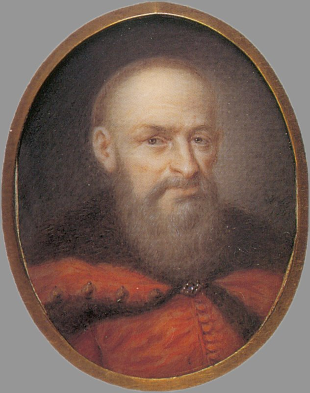
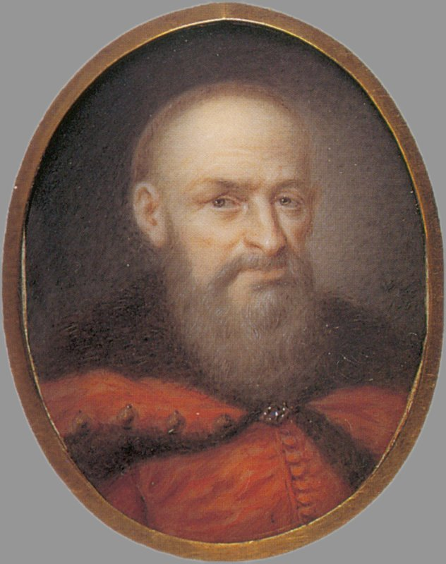

Hetman Stefan Czarniecki

Wybitny Hetman Rzeczypospolitej, urodzony w Wołyńskim województwie. Jego genialne umiejętności taktyczne, odwaga oraz oddanie dla ojczyzny uczyniły go jednym z najważniejszych bohaterów narodowych w historii Polski. Czarniecki dowodził wojskami w wielu kluczowych bitwach, w tym w Bitwie pod Kłuszynem i Ochmatowem. Jego dziedzictwo militarne i patriotyzm są niezapomniane.
Życie
Hetmana Czarnieckiego

Stefan Czarniecki urodził się w 1599 roku w Czarncy w Małopolsce. Pochodził z rodziny szlacheckiej, był synem Mikołaja Czarnieckiego i Anny z Łodzi. W młodości uczył się rycerskiego rzemiosła, a także brał udział w wyprawach wojennych.
Był on bohater wojen XVII wieku, zwyciężył pod Chocimiem i Cecorą w latach 1620-1621. W 1648 roku walczył z Kozakami Chmielnickiego, a w 1651 roku pod Beresteczkiem. W potopie szwedzkim odniósł sukcesy, m.in. pod Warką i zdobywając Bydgoszcz w 1657 roku.
Po zakończeniu potopu szwedzkiego Czarniecki nadal pełnił wysokie funkcje wojskowe. W 1664 roku został mianowany wojewodą kijowskim, a w 1665 roku Hetmanem Polnym Koronnym.
Czarniecki zmarł 16 lutego 1665 roku w Sokołówce na Ukrainie. Został pochowany w Czarncy.
Czarniecki był jednym z najwybitniejszych polskich wodzów w historii. Jego zwycięstwa nad Szwedami w czasie potopu szwedzkiego przyczyniły się do uratowania Rzeczypospolitej przed całkowitą klęską. Czarniecki jest uważany za jednego z bohaterów narodowych Polski.

Dzieła literackie o Czarnieckim
O Czarnieckim napisano wiele dzieł literackich, w tym:
- "Żywot Stefana Czarnieckiego" - Jan Chryzostom Pasek
- "Czarniecki" - Jan Kochanowski
- "Pani Skarbnikowa" - Henryk Sienkiewicz
- "Stefan Czarniecki" - Stanisław Wyspiański
Pamięć o Czarnieckim
Czarniecki jest patronem wielu ulic, szkół i innych obiektów w Polsce. Jego imieniem nazwano również jeden z fortów Twierdzy Toruń.
POLSKI

Zwrotka O Czarnieckim

"Jak Czarniecki do Poznania
Po szwedzkim zaborze,
Dla ojczyzny ratowania
Wrócim się przez morze."
Zwrotka z hymnu polskiego, odnosi się do udziału hetmana Stefana Czarnieckiego w historii Polski. W hymnie tym podkreślona jest odwaga i poświęcenie hetmana Czarnieckiego w obliczu trudnych okoliczności, jakie Polska przeżywała w czasach potopu szwedzkiego.
Ten fragment hymnu jest hołdem dla hetmana Czarnieckiego i jego roli w obronie Polski przed najeźdźcami, a także akcentuje determinację i gotowość do poświęceń w służbie dla ojczyzny. Hetman Czarniecki stał się symbolem polskiego bohaterstwa i patriotyzmu, co jest uwiecznione w tych słowach hymnu narodowego.
W I E L E Ń
Czarnecki
Naszym Patronem

Hetman Stefan Czarniecki, jako patron Zespołu Szkół w Wieleniu, stanowi inspirujący i wartościowy wzór dla uczniów oraz społeczności szkolnej. Jego postać jest pełna cech godnych naśladowania i może stanowić doskonałe źródło nauki i inspiracji dla uczniów.
- Odwaga i determinacja: Hetman Czarniecki słynął z niezwykłej odwagi i determinacji w walce. Jego postawa w obliczu trudności i przeciwności losu może być inspirująca dla uczniów, zachęcając ich do pokonywania trudności i dążenia do celów.
- Patriotyzm: Czarniecki był prawdziwym patriotą, oddanym swojej ojczyźnie. Jego poświęcenie dla Polski i jej obrona w czasach potopu szwedzkiego pokazuje, jak ważne jest kochać i troszczyć się o swoją ojczyznę.

- Umiejętność dowodzenia: Jako hetman, Czarniecki wykazał się wybitnymi zdolnościami dowódczymi. To może stanowić inspirację dla uczniów do rozwijania umiejętności przywódczych i zdobywania wiedzy.
- Dbałość o kulturę i historię: Czarniecki był również mecenasem kultury i sztuki. Jego wsparcie dla sztuki i literatury pokazuje, jak ważne jest docenianie i promowanie kultury narodowej oraz dziedzictwa historycznego.
- Etos pracy: Hetman Czarniecki osiągnął wiele w swoim życiu dzięki ciężkiej pracy i poświęceniu. To może być doskonały przykład dla uczniów, którzy uczą się, że osiągnięcie sukcesu wymaga wysiłku i zaangażowania.

Obrazy Stefana Czarnieckiego


 
